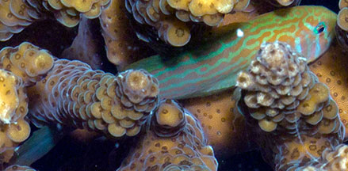
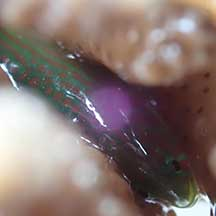
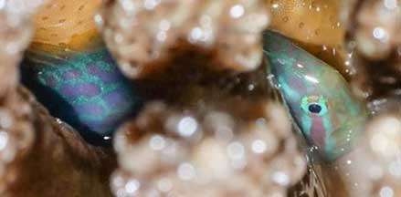

|
|
| fishes text index | photo index |
| Phylum Chordata > Subphylum Vertebrate > fishes > Family Gobiidae |
| Broad-barred
acropora goby Gobiodon histrio Family Gobiidae updated Sep 2020 Where seen? Found only in Acropora hard corals, it is often seen on many of our Southern islands. Features: 3-4cm. It has a large rounded head, yellowish-green to blue-green body with orange broken stripes and bars and spots. Well hidden among the coral branches, it is hard to see the whole fish. Usually found at the base of the coral branches, so it is hard to spot and photograph. Members of the genus Gobiodon produce a bitter mucus. Sometimes mistaken for the Machine gun coral shrimp which also lives in Acropora hard corals and is sometimes also green with orange stripes. |
 Pulau Hantu, Feb 10 |
 Sisters Islands, Dec 05 |
| Coral friend: This fish
lives among the branches of Acropora
hard corals. A study showed that this fish almost never leaves
its coral home and stays despite low oxygen levels in the water and
even when the coral is exposed at low tide. To do so, the fish is
able to breathe air! There is rarely more than two of these
fishes in one colony of Acropora coral. They can change gender from
male to female or female to male. Human uses: Unfortunately, these fishes are often harvested from the wild for the aquarium trade. |
| Broad-barred acropora gobies on Singapore shores |
On wildsingapore
flickr
|
| Other sightings on Singapore shores |
 Tanah Merah Ferry Terminal, Jun 22 Photo shared by Kelvin Yong on facebook. |
 Kusu Island, Jun 21 Photo shared by James Koh on facebook. |
Links
|